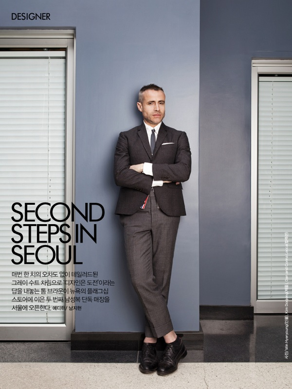

Q: When I first interviewed you 10 years ago, I wore a shirt and tie in the dead heat of summer because I was nervous you'd think I was a schlub if I didn't. I was a sweaty mess. Have you found that you often make men want to dress up?
A:I didn't know that! I thought that's how you always dressed. It's funny: people have told me that I make them want to put a suit on, which I take as a compliment. But, to be honest, what's important to me is that someone has their own style. Anyone who is confident in themselves is much more stylish. A well-dressed man doesn't have to be in a suit.
Q: Phew. Good to know.
A: Style and taste aren't always the same thing, remember. But if someone is into something, be it skirts or graphic T-shirts, let them do it. More power to them. There just has to be a level of a taste.
Q: You redefined what it means to have the modern, avant-garde men's fashion show. Was that always your intent?
A: It started from my desire to provoke guys to see a classic idea differently. To think in a new way about something they know very well. That's what all the collections are about, actually. And, I do like to entertain.
Q: How long does it take for you to come up with the ideas behind your shows and collections?
A: Sometimes it takes five minutes. It's the ideas that are easy, but producing them is what takes time. The concepts also change as we make them; I let myself move and evolve as the collection comes together.

Photo credit: 만박 via Foter.com / CC BY-NC-SA
Q: Are there ever moments when you're creatively blocked?
A: Yes, there are those times. It's like when a writer has writer's block. But for whatever reasons, it always works in the end, thankfully. The problem is having a fear of the creative block. If you're constantly open to inspiration, it will come to you. The worst thing a man can do is pressure himself into an idea.
Q: Do you have any routines for getting inspired?
A: Watching old movies. Sitting in a park. Having a drink. Going for a run.
Q: So you're not exactly checking the blogs?
A: For me, inspiration is very rarely computer related. It's classic movies, old books, looking at people in the streets of New York. Sometimes it's just closing my eyes and waiting for an idea to come.
Q: Have you ever looked at something you've done and thought, "Now, that's just too crazy"?
A: Yes. And that's when I know I should be doing it.
Q: You're never timid or anxious about a show?
A: I do sit back every once in a while and think about it. I never want it to be offensive. I don't want to cross the line of it becoming too costume. I want it to be interesting. Provocative but not profane.
Q: You just want a reaction.
A: Someone can hate the idea, or they can love it. I just don't want them to leave a show thinking, "That was nice". "Nice" isn't the reaction I desire.
Q: You once explained to me that the men's suit is actually quite a simple uniform.
A: It takes me five minutes to get ready in the morning. I don't understand why some men think a suit is so difficult to wear when often it's the easiest thing to put together. I could get dressed in the dark.
Q: Really? Five minutes?
A: Yes. Besides, I think it's nice to look as if someone didn't spend too much time getting dressed. Especially for a guy. Style is a lot more interesting when it looks effortless.